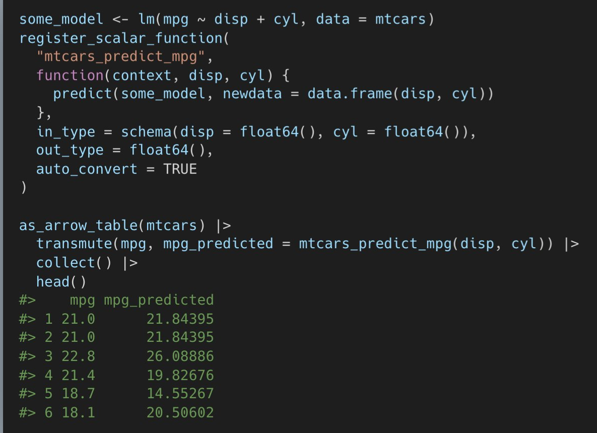

3 Arrow
3.1 Misc
Resources
Feather format built for speed, not compression. so slightly larger files than parquet
- Feature for short term storage and parquet for longer term storage
Even with S3 support enabled, network speed will be a bottleneck unless your machine is located in the same AWS region as the data.
To create a multi-source dataset, provide a list of datasets to open_dataset() instead of a file path, or simply concatenate them like big_dataset <- c(ds1, ds2)
More verbose installation + get compression libraries and AWS S3 support
Sys.setenv( ARROW_R_DEV = TRUE, LIBARROW_MINIMAL = FALSE ) install.packages("arrow")- Installation takes some time, so this lets you monitor progress to make sure it isnt locked.
Info about your Arrow installation -
arrow_info()- version, compression libs, c++ lib, runtime, etc.
-
- Has a script that downloads monthly released csv files; creates a Hive directory structure; and converts them to parquet files with partitioning based on that structure.
Statically hosted parquet files provide one of the easiest to use and most performant APIs for accessing bulk data, and are far simpler and cheaper to provide than custom APIs. (article)
- Pros and cons
- List of cases when are static files inappropriate
3.2 APIs
- Single File
- Contains functions for each supported file format (CSV, JSON, Parquet, Feather/Arrow, ORC).
- Start with
read_orwrite_followed by the name of the file format. - e.g.
read_csv_arrow(),read_parquet(), andread_feather()
- Start with
- Works on one file at a time, and the data is loaded into memory.
- Depending on the size of your file and the amount of memory you have available on your system, it might not be possible to load the dataset this way.
- Example
- 111MB RAM used - Start of R session
- 135MB - Arrow package loaded
- 478MB - After using
read_csv_arrow("path/file.csv", as_data_frame = FALSE)to load a 108 MB file- 525MB with as_data_frame = TRUE (data loaded as a dataframe rather than an Arrow table)
- Contains functions for each supported file format (CSV, JSON, Parquet, Feather/Arrow, ORC).
- Dataset
- Can read multiple file formats
- Can point to a folder with multiple files and create a dataset from them
- Can read datasets from multiple sources (even combining remote and local sources)
- Can be used to read single files that are too large to fit in memory.
- Data does NOT get loaded into memory
- Queries will be slower if the data is not in parquet format
- e.g.
dat <- open_dataset("~/dataset/path_to_file.csv")
- e.g.
3.3 Data Objects
Scalar - R doesnt have a scalar class (only vectors)
Scalar$create(value, type)Array and ChunkedArray
ChunkedArray$create(..., type) Array$create(vector, type)- Only difference is that one can be chunked
RecordBatch and Table
RecordBatch or Table$create(...)- Similar except Table can be chunked
Dataset - list of Tables with same schema
Dataset$create(sources, schema)Data Types (
?decimal) (Table$var$cast(decimal(3,2))int8(), 16, 32, 64uint8(),float(), 16, 32, 64halffloat()bool(),boolean()utf8(),large_utf8binary(),large_binary,fixed_size_binary(byte_width)string()date32(), 64time32(unit = c("ms", "s")), 64timestamp(unit, timezone)decimal()struct()list_of(),large_list_of(),fixed_size_list_of()
3.4 Operations
read_csv_arrow(<csv_file>, as_data_frame = FALSE)- Reads csv into memory as an Arrow table
- as_data_frame - if TRUE (default), reads into memory as a dataframe
write_parquet- compression
- default snappy - popular
- uncompressed
- zstd (z-standard)
- high performance from Google
- compressed to smaller size than snappy
- use_dictionary
- default TRUE - encode column types e.g. factor variables
- FALSE - increases file size dramatically (e.g. 9 kb to 86 kb)
- chunk_size
- If performing batch tasks, you want the largest file sizes possible
- if accessing randomly (?), you might want smaller chunck sizes
- explodes file size (e.g. 9 kb to 396 kb)
- compression
Convert large csv to parquet
my_data <- read_csv_arrow( "~/dataset/path_to_file.csv", as_data_frame = FALSE ) write_parquet(data, "~/dataset/my-data.parquet") dat <- read_parquet("~/dataset/data.parquet", as_data_frame = FALSE) # loaded into memory as an Arrow table- Reduces size of data stored substantially (e.g. 15 GB csv to 9.5 GB parquet)
3.5 Partitioning
Partitioning increases the number of files and it creates a directory structure around the files.
Pros
- Allows Arrow to construct a more efficient query
- Can be read and written with parallelism
Cons
- Each additional file adds a little overhead in processing for filesystem interaction
- Can increase the overall dataset size since each file has some shared metadata
Best Practices
- Avoid having individual Parquet files smaller than 20MB and larger than 2GB.
- Having files beyond this range will cancel out the benefit of your query grouping by a partition column. (see article for benchmarks)
- Avoid partitioning layouts with more than 10,000 distinct partitions.
- Optimal Size is 512MB 1GB (docs)
- Avoid having individual Parquet files smaller than 20MB and larger than 2GB.
View metadata of a partitioned dataset
air_data <- open_dataset("airquality_partitioned_deeper") # View data air_data ## FileSystemDataset with 153 Parquet files ## Ozone: int32 ## Solar.R: int32 ## Wind: double ## Temp: int32 ## Month: int32 ## Day: int32 ## ## See $metadata for additional Schema metadata- This is a dataset type so data wont be read into memory
- Assume
$metadatawill indicate which columns the dataset is partitioned by
Partition a large file and write to arrow format
1lrg_file <- open_dataset(<file_path>, format = "csv") lrg_file %>% 2 group_by(var) %>% 3 write_dataset(<output_dir>, format = "feather")- 1
-
Pass the file path to
open_dataset() - 2
-
Use
group_by()to partition the Dataset into manageable chunks - 3
-
Use
write_dataset()to write each chunk to a separate Parquet fileall without needing to read the full CSV file into R
open_datasetis fast because it only reads the metadata of the file system to determine how it can construct queries
Partition Columns
Preferrably chosen based on how you expect to use the data (e.g. important group variables)
Example: partition on county because your analysis or transformations will largely be done by county even though since some counties may be much larger than others and will cause the partitions to be substantially imbalanced.
If there is no obvious column, partitioning can be dictated by a maximum number of rows per partition
write_dataset(
data,
format = "parquet",
path = "~/datasets/my-data/",
max_rows_per_file = 1e7
)
dat <- open_dataset("~/datasets/my-data")- Files can get very large without a row count cap, leading to out-of-memory errors in downstream readers.
- Relationship between row count and file size depends on the dataset schema and how well compressed (if at all) the data is
- Other ways to control file size.
- max_rows_per_group - splits up large incoming batches into multiple row groups.
- If this value is set then min_rows_per_group should also be set or else you may end up with very small row groups (e.g. if the incoming row group size is just barely larger than this value).
- max_rows_per_group - splits up large incoming batches into multiple row groups.
3.6 Fixed Precision Decimal Numbers
- Computers dont store exact representations of numbers, so there are floating point errors in calculations. Doesnt usually matter in analysis, but it can matter in transaction-based operations.
txns <- tibble(amount = c(0.1, 0.1, 0.1, -0.3)) %>%
summarize(balance = sum(amount, na.rm = TRUE
# Should be 0
txns
# 5.55e-17- The accumulation of these errors can be costly.
- Arrow can fix this with fixed precision decimals
# arrow table (c++ library)
# collect() changes it to a df
txns <- Table$create(amount = c(0.1, 0.1, 0.1, -0.3))
txns$amount <- txns$amount$cast(decimal(3,2))
txns
# blah, blah, decimal128, blah
write_parquet(txns, "data/txns_decimal.parquet")
txns <- spark_read_parquet("data/txns_decimal.parquet")
txns %>%
summarize(balance = sum(ammount, na.rm = T))
# balance
# 03.7 Queries
- Example: Filter partitioned files
library(dbplyr)
# iris dataset was written and partitioned to a directory path stored in dir_out
ds <- arrow::open_dataset(dir_out, partitioning = "species")
# query the dataset
ds %>%
filter(species == "species=setosa") %>%
count(sepal_length) %>%
collect()format <partition_variable>=<partition_value>
computestores the result in Arrowcollectbrings the result into RExample: libarrow functions
arrowmagicks %>%
mutate(days = arrow_days_between(start_date, air_date)) %>%
collect()- days_between is a function in libarrow but not in {arrow}. In order to use it, you only have to put the arrow_ prefix in front of it.
- Use
list_compute_functionsto get a list of the available functions- List of potential functions available (libarrow function reference)
- When the query is also larger than memory
library(arrow)
library(dplyr)
nyc_taxi <- open_dataset("nyc-taxi/")
nyc_taxi |>
filter(payment_type == "Credit card") |>
group_by(year, month) |>
write_dataset("nyc-taxi-credit")In the example, the input is 1.7 billion rows (70GB), output is 500 million (15GB). Takes 3-4 mins.
User-defined functions
register_scalar_function- accepts base R functions inside your function
3.8 Cloud
- Access files in Amazon S3 (works for all file types)
taxi_s3 <- read_parquet("s3://ursa-labs-taxi-data/2013/12/data.parquet)
# multiple files
ds_s3 <- open_dataset(s3://ursa-labs-taxi-data/", partitioning = c("year", "month"))- as of 2021, only works for Amazon uri
read_parquetcan take a minute to load- you can see the folder structure in the read_parquet S3 uri
- Example Query
# over 125 files and 30GB
ds_s3 %>%
filter(total_amount > 100, year == 2015) %>%
select(tip_amount, total_amount, passenger_count) %>%
mutate(tip_pct = 100 * tip_amount / total_amount) %>%
group_by(passenger_count) %>%
summarize(median_tip_pct = median(tip_pct),
n = n()) %>%
print() # is this necessary?partitioning allowed Arrow to bypass all files that werent in year 2015 directory and only perform calculation on those files therein.
Access Google Cloud Storage (GCS)